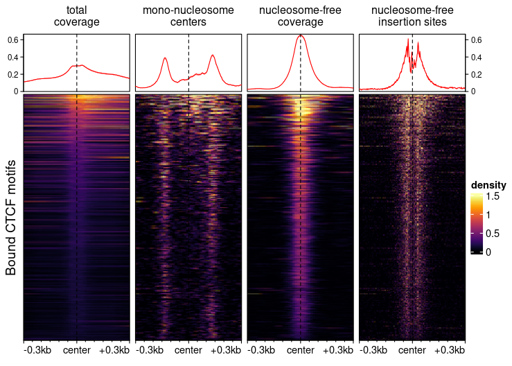

Introduction
Bioconductor offers powerful packages for the analysis and visualization of (epi)genomic data, however they are often not always easy to approach for users without an extensive bioinformatics background. The epiwraps package started off as a set of wrappers for the visualization of epigenomics data (in particular ATAC/ChIP-seq), meant to facilitate the teaching of regulatory genomics through hands-on exploration of such data. It has now evolved into a set of tools around this task, including missing R-based alternatives for some important steps and a more unified interface.
Note that the package and documentation are both still under heavy development!
Recent changes
Version >0.99.80 introduced some major changes, in particular the introduction of EnrichmentSE objects, which are now the default output of signal2Matrix and facilitate manipulations, as well as renaming of some normalization functions under a more standardized interface. Please consult the vignette to update your workflows.
Overview
While the package’s functions accept many input formats, much of the work usually done involving it uses bigwig files, and the package covers both the flexible generation of such files, as well as their use for extracting and plotting data, whether in a single region or across many regions.
This is exemplified in the following figure:

All columns are based on the same bam file, but select and/or summarize fragments differently. For example, the heatmap of insertion sites of nucleosome-free fragments was based on a bigwig file generated using:
bam2bw("aligned.bam", output_bw="NF_cuts.bw", paired=TRUE, `shift=c(4L,-5L),
binWidth=1L, minFragLength=25, maxFragLength=120, type="ends"`)More information about bigwig file generation is available in the bam2bw vignette.
For information on the extraction of signal from such files (as well as other format) and plotting of such heatmaps, see the vignette to this effect.